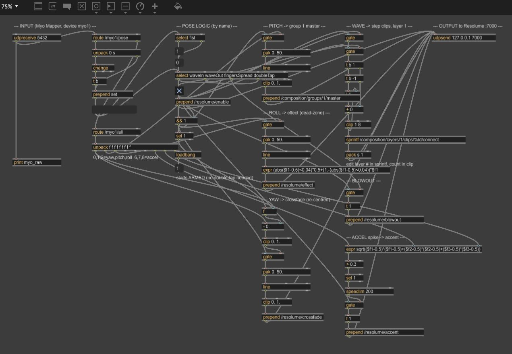

Consonant Rotations
Consonant Rotations is a fixed-media piece written for an eight-speaker surround ring. It weaves synthesizers together with samples of early speech-synthesis recordings — the mechanical, half-human voices of the first machines that tried to talk. Those consonants and vowels become raw material: stretched, resynthesized, and set spinning around the listener, so the "rotations" of the title are both musical gestures and literal movement of sound through space.
The piece was composed and mixed in Ableton Live, with each of the eight channels authored discretely for placement around the room. The player below is a stereo fold-down of those eight channels for the web — the spatial version is best heard in a surround space.
In Four Quadrants
In Four Quadrants is an instrument you play with your hands in empty air. Two webcams watch the performance space, and computer-vision patches track where the hands are and how they move across four quadrants of the frame. That tracking data drives the sound: the hands steer two drones, shape evolving textures, and voice a melodic line — no keyboard, no controller, just movement.
It was built in Max/MSP, with Jitter handling the real-time video processing and hand-tracking that feeds the synthesis engine. The result is a piece that's equally a composition, an interface, and a performance — the sonic outcome is inseparable from the choreography of playing it.
Download the Max/MSP project (.maxproj)

Custom Lighting & Visual Systems
For Cinemagic Electronic Arts, a Vancouver electronic-music collective, I design, build, and program the lighting and visual systems that run their shows. That starts at the hardware level: I hand-build custom LED fixtures with 3D-printed housings and custom PCBs, then program and control them live throughout the night.
On the visual side I run projection mapping and laser mapping and live video through Resolume and MadMapper, pulling in additional feeds over NDI. The whole rig is beat- and audio-reactive: I use waveform analysis and, crucially, Beat Link Trigger and Ableton Link to lock the visuals to the DJ's clock — so lights, lasers, and projections stay in time with the music in real time while I perform the show alongside the artist.


{kind=link}
{kind=link}
{kind=link}
{kind=link}
Halloween · Oct 26, 2024
Live beat- and audio-reactive visuals run in Resolume on a custom LED installation.
LUMEN: Theus Mago · Feb 8, 2025
Laser design and mapping in MadMapper and Resolume, on a custom LED-fixture installation.
Open Air Day Party · Jul 12, 2025
Laser design and mapping in MadMapper and Resolume, on a custom LED-fixture installation.
MOMENT: Lexer · Sep 12, 2025
Custom LED-fixture installation with a live video feed mapped over NDI into Resolume, plus laser design and programming.
Halloween · Oct 31, 2025
Installation design and rigging, with a live video feed on the LED wall via NDI and Resolume. (I'm not usually in a vampire costume)
MOMENT: Einmusik · Nov 21, 2025
Live video feed over NDI and Resolume, full rigging and lighting design, and dynamic lighting structures — motorized winches and custom movement — under live hands-on control.
MOMENT: Yulia Niko · Feb 14, 2026
The first installation in Cinemagic's new venue: a custom LED installation with NDI streams (screens not shown in this clip).
Friends Club Festival · Jun 28, 2026
Representing Cinemagic, I ran the lights on the custom “Xome” installation, using Beat Link Trigger to keep the music and visuals locked together.
Touring & guest artists including Pig & Dan, Radio Slave, Lexer, Einmusik, and Marc DePulse — and the Friends Club festival (Riyoon, Sommers (UK), Just Emma, Sivz), across Cinemagic's LUMEN and MOMENT series in Vancouver.
Myo Gesture-Controlled Lighting
This project turns a Myo armband into a live lighting controller. The band reads EMG (muscle) signals and hand poses from the forearm; a custom Max/MSP patch interprets those gestures and maps them onto the lighting and effects of the Cinemagic rig. A clutch gesture latches a parameter so it can be set and held, and arm motion modulates it — letting a performer shape the whole light show by hand, mid-set, without ever touching a console.
It extends the gesture-driven thinking behind In Four Quadrants out of the studio and onto the dancefloor, connecting a wearable sensor directly to the hardware I build and program for live shows.

MyoClutch patch in Max/MSP — mapping the armband's EMG and pose data to lighting and effect control.